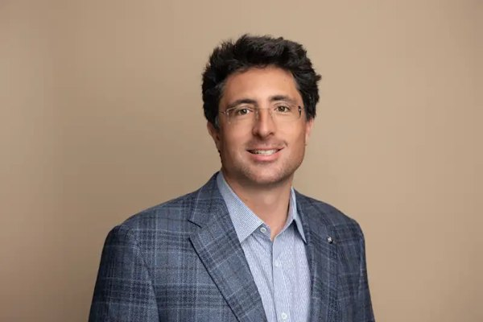

FRONTIER LAB ─ IONQ概要 ─ 01/13
 IONQIONQ ─ FRONTIER LAB 企業資料
IONQIONQ ─ FRONTIER LAB 企業資料イオン方式の量子コンピュータから、通信・センサーまで
量子計算と関連技術を商用化する会社。IonQの売上はこの2年で桁が変わっていて、量子が研究テーマから売上の立つ事業になった最初の例の一つです。
2025年度の売上
1億3,002万ドル（約200億円）
売上
1億7,380万ドル（約268億円、前年比336%増）
IonQ Platform
9,030万ドル（約139億円、前年比127%増）
出典：数字は各社の決算資料による。本サイトの調査データ（2026年11月8日時点）を含む
FRONTIER LAB ─ IONQ概要 ─ 02/13
FOCUS
今の論点は、この3つ
この会社を見る切り口は、会社ごとに違う。判定は次の決算で行う。
1
336%増の伸びは、買収か本業か
直近の売上は1億7,380万ドルで前年比336%増。IonQ Platformの売上は9,030万ドルで127%増。買収で買った売上と、本業の伸びを分けて見る。
IonQ Platformの売上と、受注残
2
通期見通し5億ドルへ、届くか
2026年通期の売上見通しは5億500万〜5億1,500万ドル。2025年度の1億3,002万ドルから桁が変わる計画で、四半期ごとの進み具合がすべてになる。
四半期売上と、通期見通しの修正の有無
3
赤字と買収の重さは、増えていないか
調整後EBITDAは1億3,360万ドルの損失。買収を重ねるほど のれん が膨らみ、技術の進み具合に対して費用が先行する構造。
調整後EBITDAの損失幅と、買収関連の開示
FRONTIER LAB ─ IONQ概要 ─ 03/13
MAP
IonQの8つのテーマ
この会社の全体像は、この8枚で組み立てる。
01イオン方式の量子コンピュータから、通信・センサーまで1億3,002万ドル（約200億円）
02国防・研究機関・データセンターが買い手3,300万ドル（約50億8,200万円）
03TempoとSuperion 256、そして工場量子コンピュータ・通信・センサー・暗号
04機械の納入と工場の受託で売上が立つ1億7,380万ドル（約268億円、前年比336%増）
05競合にも部品を売る「量子の工場」複数年の製造契約を延長
06イオン方式で唯一、DARPAの最終段階へ最大3億ドル（約462億円）
07赤字の拡大と、のれんの重さ1億3,360万ドル（約206億円、損失）
08本業の伸び、受注残、赤字の幅9,030万ドル（約139億円、前年比127%増）
FRONTIER LAB ─ IONQ概要 ─ 04/13
MODEL
お金の流れと、製品
量子システム、計算アクセス、研究・開発等の契約。事業別の最新内訳はIRで確認。
イオントラップ方式の量子コンピューター
量子ネットワーク
量子センシング・セキュリティ
FRONTIER LAB ─ IONQ成長の変遷 ─ 05/13
REVENUE
売上は2019年から2025年で650.1倍
直近の年度は1.30億ドル、前年比+202%。
出典：12月31日決算。2025年度（2025年1〜12月）まで。SkyWater（2026年7月買収完了）は含まない。
FRONTIER LAB ─ IONQ成長の変遷 ─ 06/13
NUMBERS
いまの数字
各テーマの先頭の数字を並べた。
2025年度の売上 ─ イオン方式の量子コンピュータから、通信・セン
1億3,002万ドル（約200億円）
SDT ─ 国防・研究機関・データセンターが買い手
3,300万ドル（約50億8,200万円）
IonQ Platform ─ TempoとSuperion 256、そして
量子コンピュータ・通信・センサー・暗号
売上 ─ 機械の納入と工場の受託で売上が立つ
1億7,380万ドル（約268億円、前年比336%増）
D-Wave ─ 競合にも部品を売る「量子の工場」
複数年の製造契約を延長
DARPAの最終段階の計画規模 ─ イオン方式で唯一、DARPAの最終段階へ
最大3億ドル（約462億円）
FRONTIER LAB ─ IONQエコシステム ─ 07/13
ECOSYSTEM
つながりの相手
提携と買収の相手から、会社の広がりを読む。
Amazon BraketAmazon Braketクラウド提供経路
AWSのAmazon Braketを通じてIonQの量子コンピューターを利用できる提供経路。2021年の上場発表に記載された関係です。

NVIDIA技術エコシステム
量子プロセッサーとGPUをつなぐNVQLinkの協業企業にIonQが参加。量子計算機とGPUの計算を一つの流れで使うための技術協業です。
AstraZeneca創薬の共同研究
AstraZeneca・AWS・NVIDIAと計算化学の共同研究。量子計算と従来計算を組み合わせた創薬向けワークフローを検証。
Hyundai顧客・共同研究
量子計算による計算化学の研究でAriaからForteの利用へ進むと発表。自動車産業での量子計算の用途探索です。

Airbus顧客・共同開発
Forteを使い、航空機の積載を最適化するアルゴリズムを共同開発すると発表。発表時点では研究段階の共同開発です。
出典：各社の発表資料による
FRONTIER LAB ─ IONQCEOと製品 ─ 08/13

Niccolo de Masi（ニッコロ・デ・マージ）（会長・CEO）
CEO ＆ VIEW
Niccolo de Masi
会長・CEO。この会社を見るときの軸は、次のひと言に集まる。
IonQの売上はこの2年で桁が変わっていて、量子が研究テーマから売上の立つ事業になった最初の例の一つです。
出典：人物情報は各社の公式発表による
FRONTIER LAB ─ IONQ競合比較 ─ 09/13
RISK
赤字の拡大と、のれんの重さ
技術開発と商用化の時期、研究開発支出、契約・売上計上の時期、買収統合。
調整後EBITDA
1億3,360万ドル（約206億円、損失）
FRONTIER LAB ─ IONQ競合比較 ─ 10/13
WATCH
次の決算で見る数字
本業の伸び、受注残、赤字の幅
▸IonQ Platform9,030万ドル（約139億円、前年比127%増）
▸受注残（RPO）12億ドル（約1,848億円）
▸調整後EBITDA1億3,360万ドル（約206億円、損失）
FRONTIER LAB ─ IONQ動画・X ─ 11/13
VIDEOS
柏原の解説動画
この会社を扱った直近の動画。
出典：YouTubeの公開情報による
FRONTIER LAB ─ IONQ用語 ─ 12/13
TERMS
量子技術の3つの役割
量子技術は原子や光など、とても小さな世界の性質を使います。計算・計測・接続の3つの使い道を順に見ます。
1量子ビットは0と1の重ね合わせを使って計算します
量子計算では情報を量子ビットで扱います。量子ビットは0と1の重ね合わせという状態を取り、測ると0か1の結果が出ます。計算の手順を工夫して、必要な結果が出る確率を高めていきます。
2量子コンピューターは特定の問題を別の方法で解く機械です
量子コンピューターは量子の性質を使って、通常のコンピューターとは違う方法で特定の問題を解く機械です。役に立つかは問題の種類、計算の正確さ、費用で決まります。IonQはイオンを閉じ込めて計算する方式です。
3量子センシングは小さな変化を測る技術です
量子センシングは原子や光の性質を使って時間や磁場などを測る技術です。IonQは2026年7〜9月期に、DARPAから光の原子時計25台を2,800万ドル（約43億1,200万円）で受注しました。
4量子ネットワークは量子の機器どうしをつなぐ技術です
量子ネットワークは量子の状態を使って機器どうしをつなぐ技術で、離れた量子計算機を連携させる用途を研究しています。IonQはLightsynqの買収で量子メモリと接続の技術を取り込みました。
FRONTIER LAB ─ IONQ案内 ─ 13/13
FRONTIER LAB
IonQの検証は、次の決算で続く
論点の判定タグに書いた数字を、次の決算で答え合わせする。対象6社の資料と会員コミュニティはトップから。
Discordの会員コミュニティへサイトのトップへ
数字の出典 ─ 各社の決算資料・公式発表と、本サイトの調査データ（2026年11月8日時点）による。
この資料 ─ IonQ（IONQ）／作成：FRONTIER LAB／版：2026年11月12日時点
出典：FRONTIER LAB ─ 会員向け企業理解